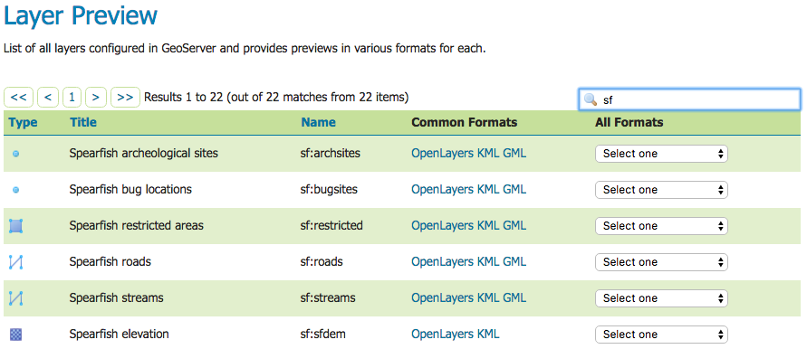
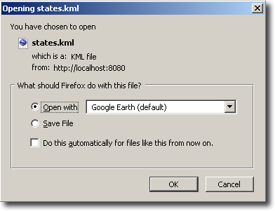

Quickstart¶
Note
If you are using GeoServer locally, the GEOSERVER_URL is usually http://localhost:8080/geoserver
Viewing a layer¶
Once GeoServer is installed and running, open up a web browser and go to the web admin console (Web administration interface). Navigate to the Layer Preview by clicking on the Layer Preview link at the bottom of the left sidebar. You will be presented with a list of the currently configured layers in your GeoServer instance. Find the row that says topp:states. To the right of the layer click on the link that says KML.
The Map Preview page¶
If Google Earth is correctly installed on your computer, you will see a dialog asking how to open the file. Select Open with Google Earth.
Open with Google Earth¶
When Google Earth is finished loading the result will be similar to below.

The topp:states layer rendered in Google Earth¶
Direct access to KML¶
All of the configured FeatureTypes are available to be output as KML (and thus loaded into Google Earth). The URL structure for KMLs is:
http://GEOSERVER_URL/wms/kml?layers=<layername>
For example, the topp:states layer URL is:
http://GEOSERVER_URL/wms/kml?layers=topp:states
Adding a Network Link¶
An alternative to serving KML directly into Google Earth is to use a Network Link. A Network Link allows for better integration into Google Earth. For example, using a Network Link enables the user to refresh the data within Google Earth, without having to retype a URL, or click on links in the GeoServer Map Preview again.
To add a Network Link, pull down the Add menu, and go to Network Link. The New Network Link dialog box will appear. Name your layer in the Name field. (This will show up in My Places on the main Google Earth screen.) Set Link to:
http://GEOSERVER_URL/wms/kml?layers=topp:states
(Don’t forget to replace the GEOSERVER_URL.) Click OK. You can now save this layer in your My Places.

Adding a network link¶
Check out the sections on Tutorials and the KML Styling for more information.